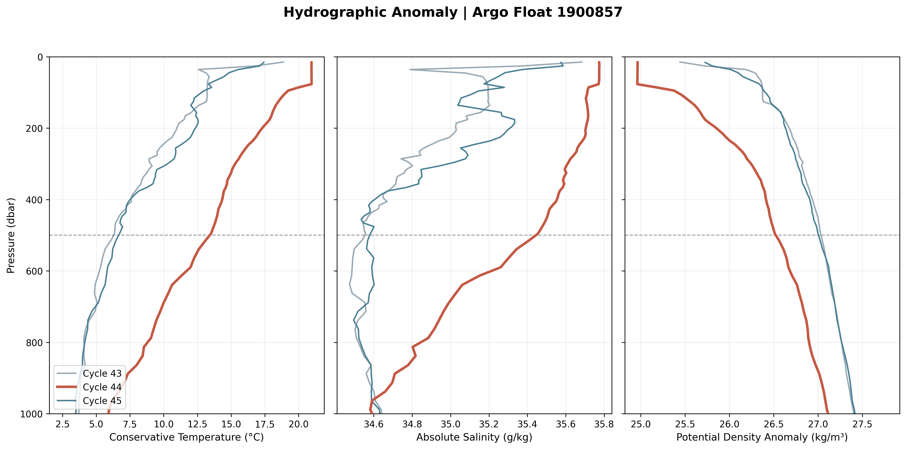

It Began with an Unexpected Observation
While examining temperature, salinity, and density profiles from Argo float 1900857, I encountered a profile that differed substantially from those recorded immediately before and after it.
On May 13, 2009, the float measured unusually warm and saline water at intermediate depths. At approximately 500 dbar, Conservative Temperature was more than 6°C higher than in neighboring profiles.
Was this a measurement error, a change in water mass, or evidence of a larger oceanographic feature?
To investigate, I examined the quality of the measurements, compared vertical density structures, and turned to satellite observations of sea-surface height.
The initial satellite evidence suggested a possible connection to mesoscale circulation, but did not establish that the float was inside an eddy.
Further examination of the float's trajectory revealed a second, more persistent hydrographic anomaly later in 2009. This led to a systematic comparison with satellite-tracked anticyclones in the Agulhas region.
By combining independent datasets and quantitative spatial analysis, I identified a tracked anticyclone whose effective boundary repeatedly encompassed the float's observed positions.
The following sections document how that conclusion was reached, including the analyses that supported it and the uncertainties that remain.
Following the Evidence
The investigation developed through seven stages, moving from an unexpected measurement to an independently supported association with a tracked anticyclone.
An Unexpected Hydrographic Profile
My initial analysis focused on the vertical distributions of temperature, salinity, and potential density recorded by Argo float 1900857.
One profile stood out. On May 13, 2009, cycle 44 recorded substantially warmer and more saline water at intermediate depths than the profiles collected immediately before and after it.
At approximately 500 dbar, Conservative Temperature reached 13.41°C, compared with approximately 6–7°C in the neighboring profiles.
Measurements from cycle 44, May 13, 2009. Values are reported at approximately 500 dbar.

Why Was This Unusual?
The anomaly was not limited to temperature. Cycle 44 also exhibited elevated salinity and reduced potential density at comparable pressures, indicating a substantial difference in hydrographic structure.
However, an unusual profile does not necessarily indicate an oceanographic event. Before interpreting the measurements, I needed to establish whether the observations were reliable.
Next question: Could the measurements be wrong?
Inside the Anticyclone
The next stage examines how temperature, salinity, density structure, and water-mass properties evolved while the float was associated with the anticyclone.